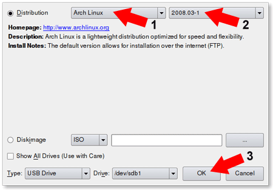
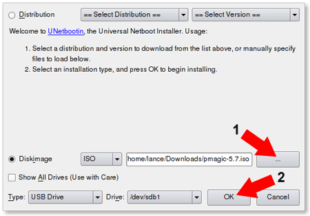
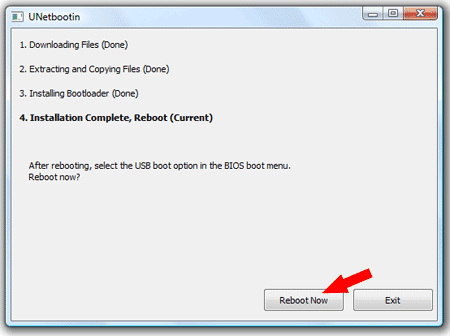

Using UNetbootin to create a Linux USB from Linux
How to Install and Use UNetbootin from Linux: UNetbootin is a Live USB creation tool that can be used to create a Live Linux USB flash drive. One nice feature of UNetbootin is that the tool is offered for Windows and Linux. In the following, I will cover how to quickly get UNetbootin up and running within an Ubuntu Linux Operating Environment.
UNetbootin was created by Geza Kovacs, released under GNU GPL v2.
Official UNetbootin Homepage: http://unetbootin.sourceforge.net
How to Install and Run UNetbootin under Ubuntu Linux
- Open a terminal (applications > accessories > terminal)
- Type
wget unetbootin.sourceforge.net/unetbootin-linux-latest - Type
chmod +x ./unetbootin-linux-* - Type
sudo apt-get install p7zip-full - Type
sudo ./unetbootin-linux-*
Alternately, you can double click the unetbootin-linux-* file to run it, since it was marked executable in step 3.
How to Use UNetbootin under Ubuntu Linux
Insert your USB flash drive and Start UNetbootin (See step 5 above)
Option One – Distribution: Let UNetbootin fetch the Select Linux Distribution files from the internet to put on your USB.
(1) Select a Linux Distribution (2) Select a specific Version (3) Make sure the correct USB Drive is detected and Click OK 
Or you can use Option Two…
Option Two – Diskimage: Browse to an ISO and have UNetbootin copy its contents to your USB.
(1) Browse to the ISO Image you would like UNetbootin to put on USB (2) Make sure the correct USB Drive is detected and Click OK 
Once the UNetbootin installer has completed, click Reboot Now 
Set your system BIOS or boot menu to boot from the USB device and enjoy your favorite Live Linux on USB